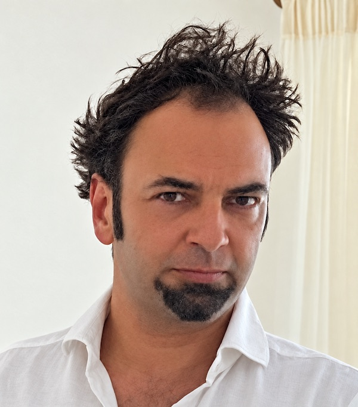

Markus Kneer
BA, University of Oxford · MA, PhD, École Normale Supérieure, Paris
Professor of Ethics of Artificial Intelligence, University of Graz
Director, Guilty Minds Lab · Research associate, Digital Society Initiative, University of Zurich
I work on the ethics of artificial intelligence, at the intersection of philosophy, cognitive science and the law. My research asks how people assign responsibility, blame and trust, to one another and increasingly to machines, and what this means for how AI should be built, regulated and used. I combine philosophical analysis with large-scale experiments.

Research
My work is both conceptual and experimental. I develop philosophical accounts of responsibility, communication and moral judgement, and test them in studies with thousands of participants, including professional judges, across the US, Europe and Asia. Since 2019 the focus has been on what happens to these concepts when artificial agents enter the picture.
Responsibility in human–AI interaction
When an AI system contributes to a harmful decision, who is blamed, and who should be? My colleagues and I have studied how people assign responsibility to human operators and to AI agents in the US, Germany and Japan, and whether they ascribe intentions and guilt to machines. A second question is what “meaningful human control” requires once humans supervise systems that are faster, and sometimes better, than they are. A current paper, In the Loop, Out of Sync, asks when a human in the loop is in control in any sense that matters.
Trust and reliance
When is trust in automated systems warranted, and how do people calibrate it? In experiments with human–AI teams, people hand over even morally loaded decisions to capable machines. In a survey of 1,300 Swiss residents across five domains, trust and the willingness to delegate vary sharply with the domain and the stakes. Findings from one application do not simply carry over to another.
Honest communication in the age of AI
When may you state something as fact, when does a false statement count as a lie, and does the answer change when the speaker is a machine? This line began with experiments on the standards people hold speakers to, and on how stable those standards are across cultures. It continues in NIHAI, a four-country consortium on the rules that should govern conversations with AI systems, and in work on how social media and the repost button change the incentives to tell the truth.
Moral judgement, law and alignment
How do people judge wrongdoing, and how should the law respond? I have studied outcome effects and moral luck, the folk concept of reasonableness, and the influence of norms on causal judgement, with professional judges as well as lay participants. Recent work extends this to AI: moral expectations “fork” between human and artificial agents, which makes “alignment with human values” an unclear target; and large language models may reproduce known biases in legal judgement, which raises the question of whether they can be removed.
Lab and projects
Guilty Minds Lab
The Guilty Minds Lab, founded at the University of Zurich in 2019 and now based at the University of Graz, brings together philosophers, cognitive scientists and computer scientists working on moral and legal cognition and the ethics of AI. It has secured several million Swiss francs in competitive funding to date, including from the Swiss National Science Foundation, HERA/CHANSE and Innosuisse.
NIHAI: Rules for conversations with AI
A four-country consortium (Graz, Zurich, Bucharest, Kraków; HERA/CHANSE, 2025–2028). It studies what people expect from conversations with AI systems, how they judge systems that violate those expectations, and what principles should govern the design of conversational agents.
Selected publications
- Responsibility gaps and retributive dispositions: Evidence from the US, Japan and GermanyKneer & Christen · Science and Engineering Ethics, 2024
- Capable but amoral? Comparing AI and human team members in moral decision-making contextsTolmeijer, Kandul, Kneer, Christen & Bernstein · ACM CHI, 2022 · Honourable mention for best paper
- The hard problem of AI alignment: Value forks in moral judgementKneer & Viehoff · ACM FAccT, 2025
- Norms of assertion in the US, Germany and JapanKneer · Proceedings of the National Academy of Sciences, 2021
- Guilty artificial minds: Folk attributions of mens rea and culpability to artificially intelligent agentsStuart & Kneer · Proceedings of the ACM on Human-Computer Interaction (CSCW), 2021
- Debiasing legal judgement: Outcome effects in open-source LLMsKneer & Baumgartner · Journal of Institutional and Theoretical Economics, 2026
- Can artificial intelligence make art?Mikalonytė & Kneer · ACM Transactions on Human-Robot Interaction, 2022 · Most downloaded paper in the journal’s history
Talks, policy and advisory
I regularly give academic talks at universities and research institutes, among them Oxford, Princeton, Columbia, NYU, the École Normale Supérieure and ETH Zurich, and at practitioner and policy forums, including the United Nations discussions on autonomous weapons.
I also work with external stakeholders, providing expert input on AI governance, responsibility and human oversight to international organisations, government agencies and private companies.
Enquiries about talks, advisory work and research collaborations are welcome.
Biography
I hold the Chair of Ethics of Artificial Intelligence at the University of Graz (IDea_Lab), direct the Guilty Minds Lab, and am a research associate of the Digital Society Initiative at the University of Zurich. I studied Philosophy, Politics and Economics at Oxford and received my PhD from the École Normale Supérieure in Paris (Institut Jean Nicod), with fellowships at Princeton and NYU. I then held positions at the University of Pittsburgh, at Columbia University, and at the University of Zurich.
My work has appeared in close to fifty articles in journals including PNAS, Cognition, Noûs, Cognitive Science and Linguistics and Philosophy, and in the proceedings of CHI, CSCW and FAccT. Before philosophy I studied film at NYU’s Tisch School of the Arts and directed several films. I live in Graz and Zurich.